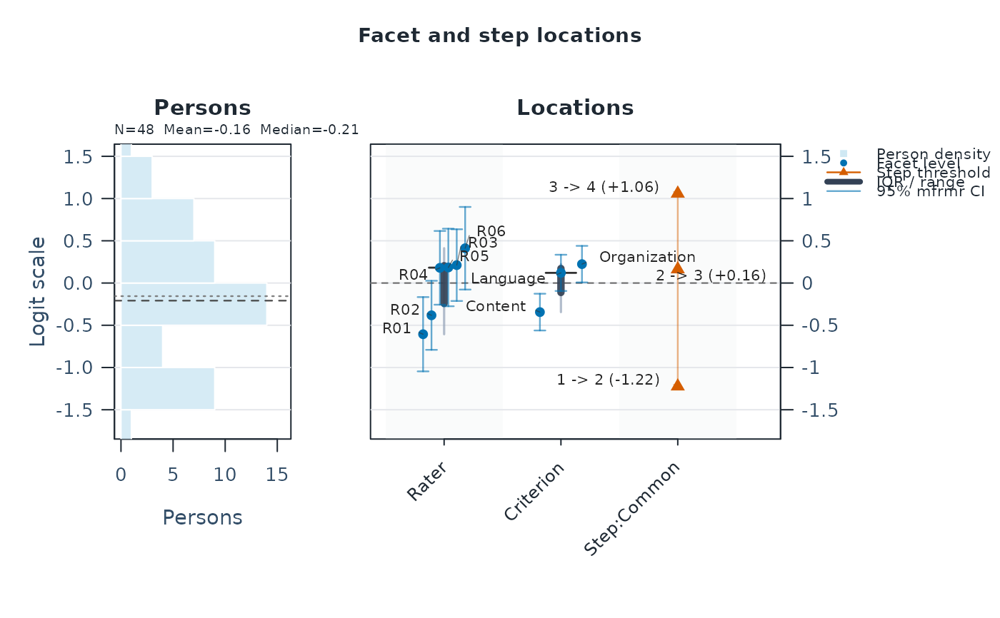

Build comprehensive first-screen MFRM results
Usage
mfrm_results(
fit,
include = "standard",
response_time = NULL,
response_time_data = NULL,
response_time_facets = NULL,
response_time_score = NULL,
output = c("object", "summary", "tables", "html"),
diagnostics = NULL,
compute = c("auto", "never"),
predictions = NULL,
intervals = NULL,
scores = NULL,
comparison = NULL,
response_diagnostics = NULL,
calibration_intervals = c("none", "normal"),
calibration_level = 0.95
)Arguments
- fit
Output from
fit_mfrm(),run_mfrm_facets(),fit_mfrm_testlet()orfit_mfrm_random_rater(). A standard long-formatdata.frameis also accepted when person and score columns can be inferred unambiguously from common names such asPersonandScore; remaining measurement columns must use recognizable facet-role names. Ambiguous extra columns are rejected rather than guessed as facets. Imported source-package fits use their ownsummary()and point-only Wright map; comprehensive reports require a native mfrmr fit.- include
Result sections or purpose presets to include. Purpose presets are
"standard","publication","validation","facets","bias","misfit_review","linking","network","gpcm_review", and"all". Section names include"fit","diagnostics","tables","precision","reporting","categories","plots","facets_fit","bias","misfit","linking","network", and"apa".- response_time
Optional response-time column name. When
NULLandincludecontains"response_time", conservative column names such asResponseTime,response_time, orRTare detected when available.- response_time_data
Optional original long-format data containing the timing column. Required for already fitted objects unless the timing column is still present in
fit$prep$data.- response_time_facets
Optional facet columns for response-time summaries. Defaults to the fitted model's source facet columns when available.
- response_time_score
Optional score column for response-time summaries. Defaults to the fitted model's source score column when available.
- output
Return format:
"object"for anmfrm_resultsobject,"summary"for its compact summary,"tables"for a named list of available data frames, or"html"for a temporary HTML report.- diagnostics
Optional matching output from
diagnose_mfrm(). Anmfrm_response_diagnostics()object is also accepted as an alias forresponse_diagnostics; do not supply it twice.- compute
Diagnostic computation policy.
"auto"preserves the standard behavior;"never"collects only sections that can be built without computing diagnostics and marks every requested dependent section as"not_computed". Matching supplied or stored diagnostics are still reused under"never".- predictions
Optional saved predictions for a testlet or random-rater fit: the result of
predict(fit, ...). Matching calibration, column roles, levels, settings and prediction-source metadata are required. Older predictions without this metadata must be regenerated from the saved fit before attachment; the fit itself does not need to be re-estimated.- intervals
Optional saved
mfrm_random_rater_intervals()result from the exact supplied random-rater fit. For a native GPCM fit, accepts saved slope intervals, curve intervals, a GPCM bootstrap result, or a named list of these. All must match the exact fitted data, parameters, population and integration settings. For native RSM/PCM fits, accepts a savedmfrm_facet_intervals()result or a named list of them. No bootstrap or interval calculation is run by this function.- scores
Optional saved
score_mfrm_persons()result for an extension, orscore_mfrm_random_rater()output, with matching source calibration. For testlets this is an alias forpredictions; supply it once. Shared raters can also attach responsepredictionsand raterintervals. No Person scoring is run here. Complete source-roster identity is required for the additional model-aware map routes; see mfrmr_model_maps.- comparison
Optional descriptive extended-model result from
compare_mfrm(). Calibration, settings and observed/omitted events must match this fit. Retained tables andplot(..., type = "comparison")compare centered facet summaries without fitting or automatic ranking. When the comparison includes saved response diagnostics, itscomparison_response_*tables andtype = "response_comparison"plot retain aligned predictive quantities; selectmetricfor other indices.- response_diagnostics
Optional saved
mfrm_response_diagnostics()output matching the fit's calibration and exact source roster. It is identity-checked and reused without integration. Ordinary RSM MML and testlet/shared-rater fits support these descriptive summaries, without reference cutoffs. Usecompute = "never"to also avoid computing ordinary plug-in diagnostics. Saved posterior summaries appear inresponse_*tables andplot(..., type = "response_diagnostics").- calibration_intervals
For testlet and shared-rater fits,
"none"(default) retains calibration estimates and approximate SEs with missing bounds."normal"explicitly requests pointwise observed-information normal intervals for fixed facets and steps; finite-sample coverage is not established. Numerical, information and estimated-boundary restrictions remain. Saved result tables, testlet calibration plots and reports retain the selection. This does not select individual-rater or Person intervals.- calibration_level
Nominal level for those calibration intervals, between zero and one; default 0.95. Nondefault calibration options are unavailable for ordinary MFRM fits.
Value
Depending on output, an mfrm_results object, a
summary.mfrm_results object, a named table list, or an
mfrm_results_html object.
Details
mfrm_results() is a high-level result object. It does not introduce a new
estimator or a new validity rule. It fits only when fit is a data frame,
computes diagnostics automatically when needed, and collects output from
existing helpers such as diagnose_mfrm(),
fit_measures_table(), precision_review_report(), and
reporting_checklist(). Sections that are unsupported for a particular fit
are retained in the status table as not_available rather than stopping
the whole results workflow. The additive readiness table keeps Numerical,
Data, Design, Stability, Diagnostics, Reporting, and Plot interpretation
states separate. Plot routes can therefore remain available for diagnosis
while InterpretationStatus marks them as review-only. The returned object
also carries
next_actions and input$reproducible_code so users can move from the
comprehensive first screen to explicit reporting or replay code.
The examples call this object res to distinguish it from
results <- summary(fit) in the quick start. Use mfrm_report(res) and
export_mfrm_results(res) for reporting and export; those functions need
the comprehensive results object. If diagnostics were already computed,
pass them with diagnostics = diagnostics to reuse them.
Include presets
"standard": fit, diagnostics, tables, precision, reporting, categories, and plot routes"publication": standard sections plus APA output assembly"validation": standard sections plus FACETS-fit/df-sensitivity review"facets": fit, diagnostics, tables, categories, plots, and FACETS-fit review for FACETS-facing migration work"bias"/"bias_review": standard sections plus facet-level bias-screen guidance; interaction bias still requires explicit facet-pair selection"misfit"/"misfit_review": standard sections plus unexpected-response, displacement, and pathway-map case-review surfaces"linking"/"anchors": standard sections plus anchor-readiness and operational linking-review surfaces from the fitted object's stored anchor review; drift and screened-chain review still require multiple fitted forms or waves"network": standard sections plus network/connectivity review"response_time": descriptive response-time QC review when timing metadata are supplied throughresponse_time/response_time_data"gpcm_review": standard sections withGPCMcaveats retained in the collected summaries and reports"all": standard sections plus FACETS-fit, network, APA, and response-time sections
Response-time metadata
Response-time review is opt-in and descriptive. It does not change fitted
MFRM estimates, fit a joint speed-accuracy model, or create automatic
exclusion rules. Use include = "response_time" together with
response_time = "ResponseTime". When fit is an already fitted object,
also supply response_time_data = original_data because fitted objects keep
only the measurement columns needed for estimation.
What to inspect first
Start with summary(res). The most useful fields are:
overview: input mode, model, method, table count, and plot-route countdecision: plain-language interpretation, formal-inference, reason, and next-action text derived from source-fit readiness and the saved diagnostic precision profile. Missing precision remains unreviewed; a positive precision assessment cannot override source-fit restrictions. Reading this summary does not compute new diagnostics or establish sampling coverage.readiness: separate analysis and plot-interpretation checksfit_readiness,fit_readiness_components, andfit_readiness_parameters: the exact source-fit readiness record retained separately from the workflow-levelreadinesstabletriage: first-screen signals ordered by unavailable/review/info/okstatus: which sections were available, skipped, or unsupportedplot_map: supported plot routes, availability, and interpretation statusnext_actions: recommended follow-up callsreproducible_code: replay script for the first-screen route
Data-frame input
Direct data-frame input is intentionally narrow. It accepts unambiguous
Person / Score columns and familiar facet-role names such as Rater,
Item, Task, or Criterion, and fits the RSM / MML route. It stops
when other columns could be metadata, grouping variables, or background
variables rather than silently treating them as measurement facets. For
research scripts, use fit_mfrm() explicitly so column roles, model,
method, anchors, and missing-data rules are recorded. Use
mfrm_results_interactive() only for opt-in column selection at the console.
Visualization and HTML
For ordinary models, plot(res) routes to the primary native Wright map when the fitted object
contains compatible person and facet locations. This default retains
available mfrmr facet uncertainty. Use plot(res, type = "fit") when the
explicit three-plot Wright/pathway/category bundle is wanted. The compact
native default discloses any omitted facet locations in its subtitle and
data$retention; use plot(res, top_n = Inf) for a complete final map.
Other routes include plot(res, type = "wright"), "pathway",
"fit_pathway", "qc", "category", "anchors", "response_time",
and "tables". The Wright map is the required first fitted-scale figure;
"fit_pathway" is a follow-up with Infit or Outfit on the horizontal axis
and measure on the vertical axis. output = "html" writes a
lightweight temporary HTML file;
use launch_mfrmr_viewer() when you want an optional local Shiny reader
for an already-created mfrm_results object. Use
export_mfrm_results() for a compact analysis archive of the comprehensive
results object, or export_mfrm_bundle() when a fit-centered durable
analysis archive is needed. Neither route deidentifies its contents.
Typical workflow
Fit explicitly with
fit_mfrm()in scripts and manuscripts.Call
res <- mfrm_results(fit).Read
summary(res, view = "brief")and itsreadinesstable, then create the requiredplot(res, type = "wright", show_ci = TRUE, top_n = Inf)figure.Read
summary(res)$triage,summary(res)$status,summary(res)$plot_map, andsummary(res)$next_actions.Call
report <- mfrm_report(res)when a report-ready surface is needed.Use
export_mfrm_results(res, preset = "starter")to write the Wright map, CSV, report, RDS, replay, and manifest files for controlled review. Treat the folder as potentially identifying unless it has been separately transformed and reviewed under the applicable data-handling policy.Use
plot(res, type = "fit_pathway", include_person = TRUE, top_n_person = 12, person_labels = "none", facet_labels = "flagged")orplot(res, type = "qc")for focused visual follow-up.Optionally inspect the same result with
launch_mfrmr_viewer()in an interactive session.Use
build_summary_table_bundle()or the helper named insummary(res)$next_actionsfor report-specific follow-up.
Reproduce attached inference
When additional inference or posterior diagnostics are attached, the code
shown by summary(res) and in HTML saves and reloads the complete res
object. Choose the file path before running it. This preserves attached
methods, levels and unavailable results without fitting or recalculating.
Exported replay scripts only reload the RDS already written by the export.
The starter export index links the saved RSM/PCM and GPCM inference figures
alongside the ordinary maps, whose uncertainty and fit meanings are separate.
Saved RSM/PCM fixed-facet intervals
Use intervals = list(raters = ci) with output from mfrm_facet_intervals().
The fit must match the saved data, parameters, constraints, population and
integration settings. Named results give facet_ plot routes, for example
plot(res, type = "facet_raters"); a single result gives facet_inference.
Include "plots" to enable those routes. as_ggplot() supports customization.
Tables, reports and exports preserve the selected method, confidence level,
contrasts, cluster mapping and fixed/unavailable targets. Export replay
reloads saved results without refitting or changing the selected intervals.
These are pointwise fixed-facet intervals, not simultaneous rater decisions
or uncertainty for replacement raters. Ordinary map and fit displays keep
their own meanings and are not recalculated with the attached covariance.
Saved GPCM inference
Attach explicitly selected results, for example
intervals = list(slopes = confint(fit, scale = "standardized")).
Tables retain the target, method, confidence level and multiplicity choice;
mfrm_report() and export_mfrm_results() preserve them. Names become
lowercase plot routes, e.g. plot(res, type = "gpcm_slopes"), when "plots"
is included. A single result uses "gpcm_inference". Passing a raw slope
bootstrap object selects its default relative 95% pointwise intervals;
pass confint(bootstrap, ...) to select a different target or level.
Replay reloads saved results, without refitting or changing interval methods.
Older intervals lacking source metadata must be recomputed from the saved fit.
These results supplement ordinary location and fit displays; discrimination
is not rater quality and does not select scoring weights.
Testlet and random-rater results
fit_mfrm_testlet() and fit_mfrm_random_rater() results use a separate
reporting route within the same mfrm_results class. It always retains
calibration estimates, numerical checks, settings, data usage and interval
meanings. Requested ordinary-model sections that are unsupported are
marked not_available. Neither compute setting fits, scores, resamples
or computes diagnostics for these models. Supply separately computed
predictions, scores or intervals explicitly; their absence is recorded.
Rebuild results from an older saved fit to apply current calibration-bound
defaults without refitting. Previously saved result bundles keep their
original tables. Explicit normal bounds do not improve their coverage.
Use mfrm_report() for a static report and export_mfrm_results() for
CSV/HTML/RDS and figures. Numerical convergence does not establish model
adequacy or general interval coverage. The ordinary Wright map, residual
diagnostics, Shiny viewer, response-MI pooling and portable-calibration
workflow do not support these classes. Plot types are "calibration"
(first fixed facet by default; select with facet) and "scores" for
testlets, or "raters", "intervals" and "scores" for random-rater results.
Both support "comparison" and, with corresponding saved quantities,
"response_comparison" and "response_diagnostics". These
models also support "wright" and "fit_pathway" through the separately
defined conditional-location and posterior-residual routes in
mfrmr_model_maps, with matching saved source evidence. All these
routes require "plots" in include; saved predictions/intervals are
required for their corresponding plots. Report styles use the same stored
evidence and boundaries; they do not add ordinary-model reporting templates.
Examples
# \donttest{
# Load the package and example ratings
library(mfrmr)
toy <- load_mfrmr_data("example_operational")
# Fit the model
fit <- fit_mfrm(
data = toy,
person = "Person",
facets = c("Rater", "Criterion"),
score = "Score",
method = "MML",
model = "RSM"
)
# Build the fuller results object, including diagnostics
res <- mfrm_results(fit)
review <- summary(res)
review$decision
#> Interpretation FormalInference FitReadiness
#> 1 Ready for formal inference Yes ready
#> Why NextAction
#> 1 All stored fit-readiness components passed. Read the compact results summary.
review$next_actions
#> Priority Area
#> 1 1 Overview
#> 3 2 Triage
#> 2 2 Wright map
#> 4 3 Diagnostics
#> 5 4 Visual diagnostics
#> 6 5 Fit pathway
#> 7 5 Precision
#> 8 6 Reporting
#> 9 11 Tables
#> Action
#> 1 Read the compact results summary.
#> 3 Read the first-screen triage before branching.
#> 2 Create and inspect the required shared-logit scale map.
#> 4 Review diagnostic key warnings before report drafting.
#> 5 Open the QC dashboard after reviewing the Wright map.
#> 6 Review Infit against measure, including selected person rows when useful.
#> 7 Inspect fit, separation, reliability, and ZSTD wording boundaries.
#> 8 Use the reporting checklist as a guide for preparing a manuscript.
#> 9 Create an appendix-ready summary-table bundle.
#> Route
#> 1 summary(res)
#> 3 summary(res)$triage
#> 2 plot(res, type = "wright", preset = "publication", show_ci = TRUE, top_n = Inf)
#> 4 summary(res$diagnostics)$key_warnings
#> 5 plot(res, type = "qc", preset = "publication")
#> 6 plot(res, type = "fit_pathway", fit_stat = "Infit", include_person = TRUE, top_n_person = 12, person_labels = "none", facet_labels = "flagged", preset = "publication")
#> 7 summary(res$components$precision_review)
#> 8 summary(res$components$reporting_checklist)
#> 9 build_summary_table_bundle(res)
#> Reason
#> 1 Confirms input mode, model, method, section status, table coverage, and available figures.
#> 3 Triage orders unavailable, review, information, and OK signals across diagnostics, tables, plots, and reporting outputs.
#> 2 The Wright map is the primary fitted-scale figure: compare person targeting with facet levels and step thresholds before branching into diagnostics.
#> 4 Diagnostic warnings identify the highest-priority fit, precision, residual, or category follow-up checks.
#> 5 The QC dashboard gives a focused follow-up view of fit, residual, and category summaries.
#> 6 This follow-up separates measure uncertainty from fit displacement while keeping person inclusion explicit.
#> 7 Precision review keeps fit-size, standardized fit, and separation evidence in separate reporting categories.
#> 8 Checklist rows identify report-ready, missing, and caveated sections.
#> 9 The bundle exposes table roles, plot readiness, and conservative appendix presets.
# Draw the Wright map
plot(res)

# }